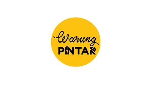
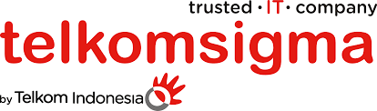

With over two years of experience in product management, AI, and data engineering, I am passionate about building and managing innovative and impactful solutions for the aquaculture industry. As an Associate Product Manager at eFishery, I lead the full product lifecycle for ML AI solutions, from ideation and market research to development, testing, deployment, and launching.
I spearhead collaboration with market research and business development teams to gather and analyze market data, ensuring a competitive edge for AI and ML solutions. Additionally, I drive the creation of business cases and ROI models, while prioritizing product features and workload effectively in fast-paced environments.
Education
Master of Computer Applications (MCA) - Data Scientist (2019-2022)
School: Universitas Islam Indonesia
Bachelor of Science in Mathematics (2009-2013)
School: Universitas Padjadjaran (Unpad)
Work Experience
Associate Product Manager - eFishery
January 2023 - August 2024
Leading and managing the full product lifecycle for ML AI solutions in aquaculture.
Collaborating with market research and business development teams to gather and analyze market data.
Developing business cases, ROI models, and balancing product features with value and urgency.
Launched AI-powered products like Pond Detector and Route Planning Optimization.
Led satellite imagery projects and OCR technology implementations to streamline data management.
Artificial Intelligence Engineer - eFishery
August 2022 - December 2022
Developed an Image Searching System and Image Duplicate Detector for satellite imagery.
Innovated AI solutions for pond detection and classification, and improved document processing using OCR.
Data Engineer - Warung Pintar

May 2019 - June 2021
Implemented a DW BI system based on Ralph Kimball’s data warehouse toolkit on GCP.
Data Engineer - PT Sigma Cipta Caraka (Telkomsigma)

June 2021 - August 2021
Worked on data solutions in Jakarta for business improvement.
Skills
Product Management
Product Lifecycle Management
Technical Product Management
Data Engineering
Machine Learning
Certifications
The Ultimate GIT 5-day Challenge
Data Science on the Google Cloud Platform
Kubernetes Solutions
Baseline: Data, ML, AI
Conversational UX Level 1
Publications
Mi-Botway: a Deep Learning-based Intelligent University Enquiries Chatbot
Optimizing Planning Service Territories by Binary K-means Clustering
Image Captioning with Attention for Smart Local Tourism
Boarding House Renting Price Prediction Using Deep Neural Network